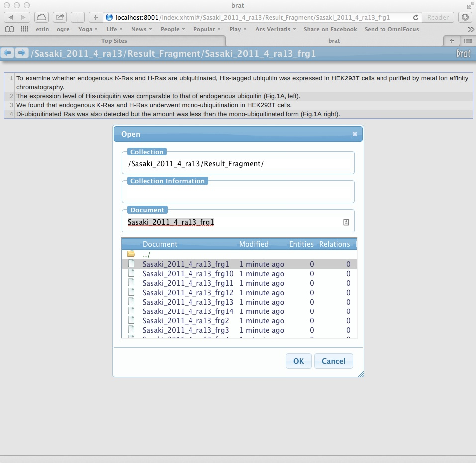

Epistemics and Fragments
Developing the epistemic model of documents with marked up text from articles based on the 'Fragmenter'
- A Generative Model for Text from Experimental Observations
- Generating the Big Mechanisms Evaluation Corpus
- Epistemics and Fragments
- Developing NL Annotations for KEfED Elements
- Reading Against a Model of Experimental Evidence
- Deploying the BioScholar System
- Building a Database of Observations from Result Text
- Pathway Logic Experiment Types
- Initial Extraction Study of Results-Based Epistemics
- KEfED Modeling of Coprecipitation Ras Papers
- KEfED Database Construction
- List of Experimental Motif Types + Definitions
1. Epistemic types and fragments
Based on Anita de Waard's work, we incorporate the 'Ontology of Reasoning, Certainty and Attribution' (ORCA, http://vocab.deri.ie/orca as the basis of studying the structure of epistemics within the text of cancer papers). This is described in Anita's thesis chapter at this link: EpistemicEvaluationDraftThesisChapter.pdf.
Thus we have a three-part code for clauses within any given document: value ( with values 0, 1, 2, 3 denoting a progression from 'no knowledge' to 'certainty'), basis (R = 'reasoning', D = data, 0 = unidentified), and source (IA = author, N = 'named external source', 0 = no attributed source).
Specifically, some specific code combination occur frequently
Group 1: Generic statements:
- fact: A blanket default statement (assumed true, no basis, no source):
v3_B0_S0 - problem: an unknown statement with no validity and no solution:
v0_b0_s0
Group 2: Author's thoughts and findings:
- hypothesis:
v1_b0_sIA - result:
v3_bD_sIA - implication:
v2_bD_sIA
Group 3: Cited thoughts and findings:
- cited-fact: A blanket default statement (assumed true, no basis, cited
source):
v3_b0_sN - cited-problem:
v0_b0_sN - cited-hypothesis:
v1_b0_sN - cited-result:
v3_bD_sN - cited-implication:
v2_bD_sN
2. BioScholar, the Digital Library subsystem and the Fragmenter
The BioScholar system is the web application I am building to house the framework for knowledge management and engineering based on the KEfEd / CoSI model. The Digitial Libary is concerned with all aspects of managing papers and the Fragmenter is simply the subcomponent within that that handles delineating fragments of text from within the oveall body of the document. We have advanced this system significantly.
Figure 1 shows the latest version of the annotation system. This image shows the basic formulation of the Digital Library as a way of managing the full text documents of papers (PDFs, XMLs, HTMLs). It provides fragmenting capability over PDF files where each numbered fragment may be made up of several blocks, each fragment may also be assigned a fragment type (based on the epistemic categories shown above).
 Figure 1: Screenshot of the fragmenter superimposed over Sasaki et al. 2011
Figure 1: Screenshot of the fragmenter superimposed over Sasaki et al. 2011
Figure 2 shows the list of fragments.
 Figure 2: Screenshot of the list of fragments themselves (there is a bug where the fragments are ordered by numbers in their string order, not numeric).
Figure 2: Screenshot of the list of fragments themselves (there is a bug where the fragments are ordered by numbers in their string order, not numeric).
Note that Figure 1 has a button labeled brat. This permits the user to automatically dump the current fragments to an installation of the brat annotation system for subsequent markup and processing (see Figure 3).
 Figure 3: A list of 14 fragments pertaining to experimental work from Sasaki et al. 2011 where each fragments delineates a separate experiment.
{kind=link}
The Bioscholar system now has implemented an annotation framework that permits annotators to process texts according to these epistemics codes is shown at the following link: